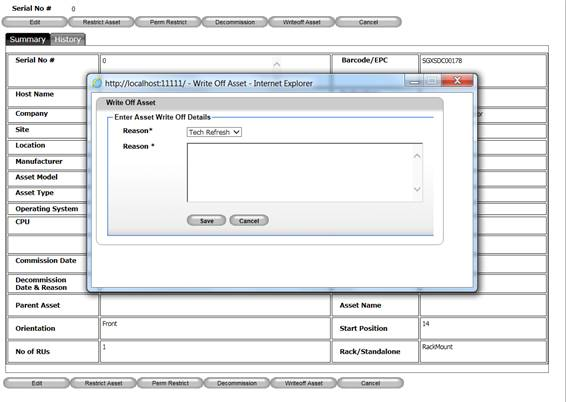

Write-Off Asset function will be used to write off assets whose value is reduced or become zero in account books. No other transaction is possible for a written off asset and this transaction cannot be reversed. Most typically this function is used to record the disposal of an asset.
1. From Search Asset >> View Asset (by clicking on individual asset’s serial no)
2. Click Write-Off button to write-off an asset or click Cancel button to disregard operation.

Figure 132: Search Asset Screen – Write-off
3. Specify reason for the write-Off.
4. Click Save button to write-Off the asset or click Cancel button to disregard operation.
|
Copyright © 2019 Hewlett
Packard Enterprise,v5.2.
|